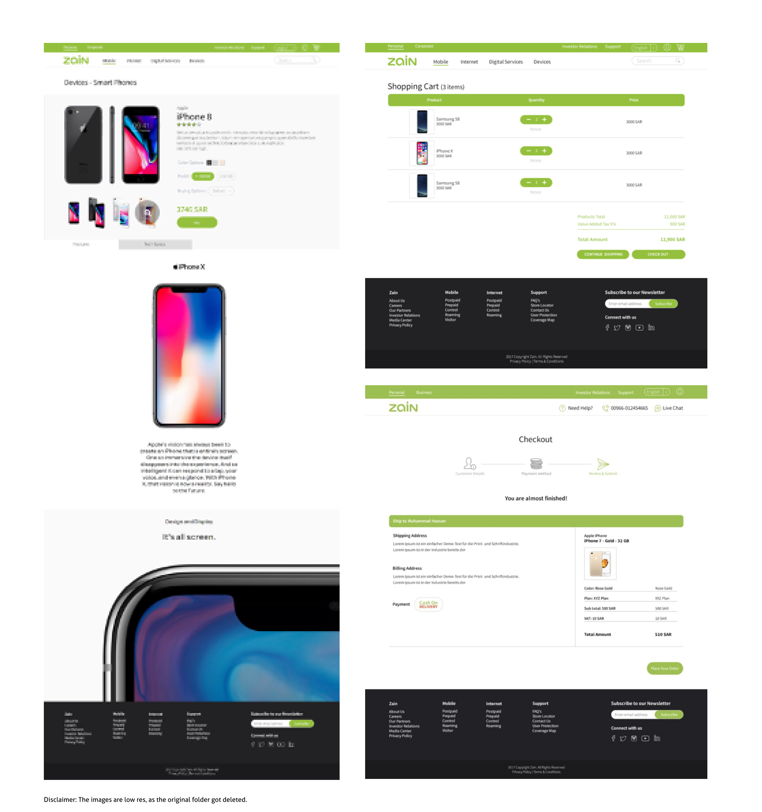

Website, Client portal & Eshop
Summary
Problem statement
Users of the network had to go through different platforms and methods to purchase a phone, a network bundle or to look for their personal package details. They want a streamlined single entry pathway to achieve their objective.
Who is affected
Current and future customers
What is the problem. What are the struggles and what pain point(s) need to be relieved?
No streamlined check out method.
Different numbers to call for different services.
Confusion between product details and network package details.
Finding information on the website.
Huge volume of customer calls to customer care centres.
Where does it happen
Online
Why does it matter
By not having a single-entry point to cater for all the customer needs, it increases the level of confusion and frustration amongst the customers.
How did I do it
Here is the design process along with the deliverables given at each milestone.
The project started with introductory meetings with the client in Riyadh, Saudi Arabia. Initial meetings were held with business owners, customer experience team and development team to establish the User Experience activities to be carried out in the project. Five different key audience were established in the initial sessions with their customer experience team. Non-customer, low value customer, medium value customer, high value customer and ex-customer.
Research and requirments gathering
We collaborated with Ericson India for backend development. As a user experience designer, my reference point was the product requirement document (PRD) provided by the client. Several workshops were carried out on-sight with the developers and the client around the use cases, user needs, process flows.
Benchmarking and competitive analysis
While weekly meetings were organised for discussing use case scenarios, I started my research with comparing regional and global self-care apps. The telecom operators were selected on the basis of their functionality, interaction design and distinguished features.
Requirment refinement and design exploration
Workshops were carried out to define the avenue and path that users can take to access the website, self-care and e-shop. I carried out card sorting activity internally to build the blueprint for information architecture.
Information architecture
Two different versions of the sitemap were presented to the client. Version A of the sitemap was focused on the business units i.e. business to business and business to customer. Version B of the sitemap focused more on the operational units i.e. E-shop, self-care, help & support.Below is the comparison of the old and new information architecture. The old information architecture went as deep as level 4 and the important information about their products was not easily visible. There were no clear entry points which divided their business unit and customer operational units.
Old Information architecture

New Information architecture
In new information architecture, the hierarchy is very clear. Level 1 gives you an idea about the operational unit and level 2 gives you an entry point to their products. Based on the feedback and the priority, website information was shifted to the footer.
User flows and sketches
User-flows
With respect to use cases, I created low fi. screen maps which helped me to give an approximation on the effort required to build the screens. Assumptions and questions were listed down for the client and developers.
Sketches
Low fi screen-maps were really helpful for dividing the work load with my fellow colleagues. In sketching workshops we started creating user flows and screens which were later converted to hi-fi wireframes and prototypes.
Wireframes
Once the user flows were discussed with the developers and business analysts, I created hi-fi wireframes which were to be presented to the business and marketing teams. A mini project plan was mapped out to start a cycle of presentations, incorporating changes and getting approvals from respective business owners of three streams (e-shop, website and self-care). Below are few wireframes for all three streams.
Guidelines
Based on their brand guidelines, I created the basic components and font library which was then sent for approval before the designs were designed.Content approvals
This project was released in two different languages i.e. Arabic and English due to which content management was challenging. There were a lot of excel sheets involved in keeping a track of the content and its translated Arabic version. Along with content finalisation, another challenge was to map the old content to the new IA. I did gap analysis and held workshops with marketing team to provide us with the missing content.
Design handover
Website
Eshop
Selfcare portal
Challenges and measure of success
After the approvals, the project files were handed over to the User Interface designer with the guidelines from the client. My presence was still required on-sight as I had to communicate between marketing, business and our development teams but work load was reduced.
Challenges
This project was my first project with an international client. It was filled with new challenges and learnings. Challenges are always a part of the project, but now that I have accomplished the task it was overall a good learning experience. - Working with multiple teams from different countries (India, Saudi and Sweden) was one of the biggest challenges in this project.- Communicating with developers on sight was at times very tricky but we managed.
- Working in different time zone with the on-sight team and off shore team.
- Working in a place where language.
Measure of sucess
Previously having just a website for customers showing the basic information, this project led to invite customers to shop for their mobile phones with mobile plans. Not only e-shop facility, users were able to log into their account and manage their services, know current benefits, billing history for pre-paid and post paid services and many more. The introduction of the website, e-shop and self care portal in 3 different languages enabled them to make the market launch in all of the Middle East at one go. In the usability testing sessions that were carried out after the project went live, the page views and conversion rate increased at a high rate which communicated how the sales were going. All this was done using google analytics. There were however in few cases drop-offs but those areas were then taken on as part of continuous improvement/ prod support issues.